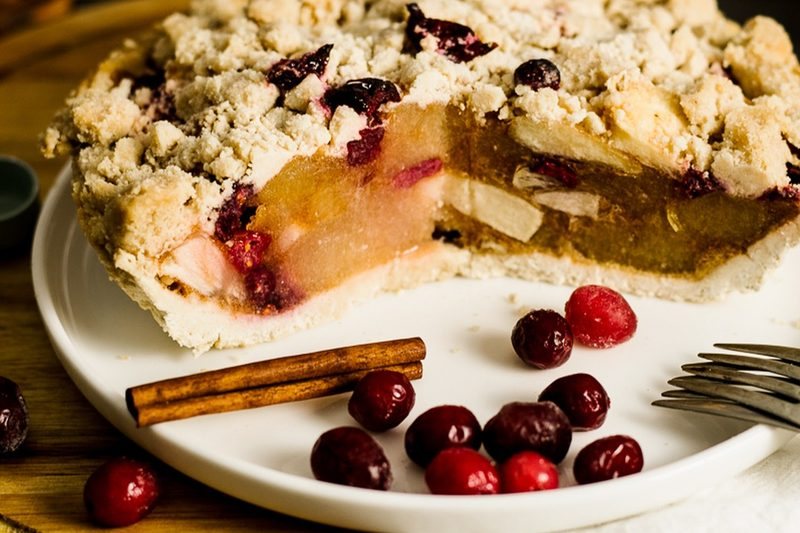
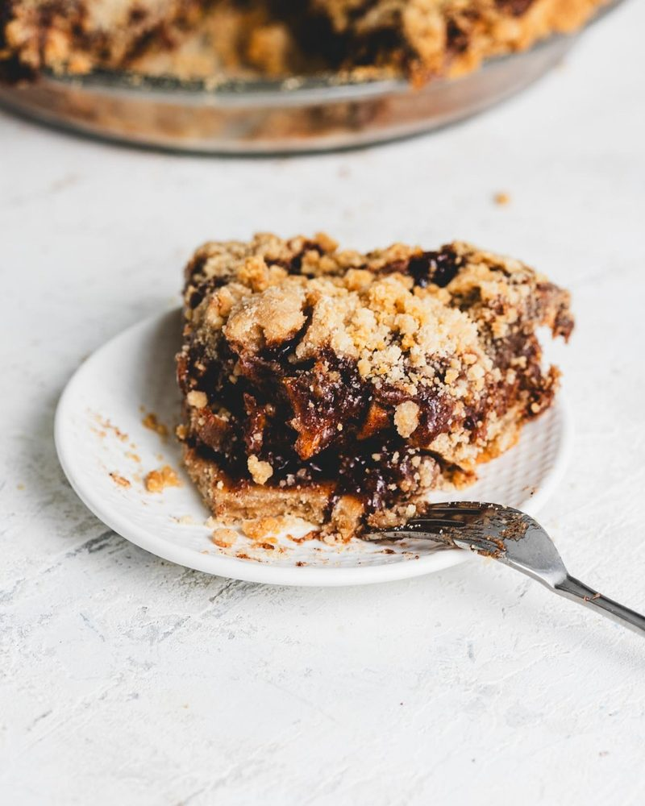

7 Pie Crust Tricks for the Season (No Beans Needed)
Sugar as pie weights, a second pan, baking from frozen, sealing with chocolate and more. Seven ways to a crisp crust this pie season, plus a free printable.
- Sugar weights: fill the lined crust with sugar instead of beans. You get a crisp crust and a jar of toasted sugar.
- Two-pan: nest a second pie tin on top. It holds the sides up, no weights at all.
- Bake from frozen: dock it (poke fork holes all over), freeze it solid, bake it straight from the freezer.
- Hot sheet pan: bake your pie on a sheet pan that preheated with the oven, on the lowest rack.
- Seal it: brush a baked crust with melted chocolate before a cold filling goes in.
- Crumb crust and press-in crust: no rolling, barely any shrinking.
Pie season is here, and every year I get the same questions. Why did my sides slide down? Why is the bottom soggy? Do I really need to buy pie weights? Honestly, no. In my par bake vs blind bake post I covered when to pre-bake a crust. This one is about how. These are the tricks I actually use, and a couple of them you already have the stuff for in your kitchen.
Download my free crust tricks printable (PDF) and stick it on the fridge for the holidays.
1. Sugar as pie weights (my favorite)
This one's a two for one. Line your chilled crust with parchment (or a pan liner) and fill it all the way to the rim with regular granulated sugar instead of beans. Sugar is heavy and fine, so it gets into every corner and holds the sides up better than beans do.
Bake it a little lower than usual, around 350°F, because sugar can start to melt at the edges if you push the heat. It takes a bit longer, so pull it when the edges are golden. Lift the parchment out by the corners, sugar and all.
Now the bonus. That sugar comes out lightly toasted, a little beige, with a soft caramel smell. Let it cool, break up any clumps, and keep it in a jar. Use it anywhere you'd use regular sugar where you want more depth:
- Brown butter cookies and blondies
- Crumb topping for your next fruit pie
- Caramel sauce
- Coffee, tea, or sprinkled over oatmeal
And you can use it as pie weights again. Every round it gets a little toastier.
2. The two-pan trick
No beans, no sugar, nothing to pour. Lay your crust in the pan, then set a second pie tin of the same size right on top of it, so the crust is sandwiched between the two. The top tin holds the sides against the pan and keeps the bottom from puffing. Bake about 15 minutes, lift the top tin off, then give it another 5 to 10 minutes so the bottom dries out and colors. Thin metal tins work best here, and a little grease on the bottom of the top tin keeps it from sticking.
3. Bake from frozen
The reason sides slump is the fat melts before the crust has a chance to set. So don't give it the chance. Line your pan, dock it (poke fork holes all over the bottom so steam can escape), and freeze it until it's rock hard, at least 30 minutes. Then bake it straight from the freezer, no weights. By the time the butter softens, the crust has already set around it. Bonus, you can keep a few lined pans in the freezer for the holidays and bake them as you need them.

4. The hot sheet pan
Put a sheet pan on the lowest rack while your oven preheats, and give it a good 20 minutes to get hot. Then set your pie right on it. That hot metal hits the bottom of the pie dish the second it goes in, so the bottom crust starts cooking right away instead of sitting there cold under the filling. It also catches any drips from a juicy fruit pie.
At the bakery our crust still gets its 10 minutes in the oven empty first, every time. The hot pan isn't a replacement for that. It's extra insurance for the bottom, especially with apple, blueberry and cranberry.
5. Seal it with chocolate
This one is for any cold, wet filling that goes into a crust that's already fully baked. Melt some chocolate, brush a thin layer over the bottom and up the sides of the cooled crust, and let it set in the fridge for about 10 minutes. Now the filling sits on chocolate instead of crust, so the crust stays crisp for days instead of hours.
No cocoa butter? You don't need it. Any of these work:
- Dark or semisweet chocolate for chocolate, banana or coconut cream
- White chocolate for lemon, lime or berry, so it doesn't fight the flavor
- Warm jam (apricot or raspberry, strained) for fresh fruit tarts
What counts as a cream pie? Chocolate cream, banana cream, coconut cream, lemon or lime curd tarts, key lime, pudding pies, mousse pies, no-bake cheesecake, and fruit tarts with pastry cream. Basically, if the filling never goes in the oven, the chocolate seal works.
Not making a cream pie? For fillings that bake in the crust, like pumpkin or quiche, skip the chocolate. Brush the half baked crust with a thin wash and give it 2 more minutes to set a barrier instead. My vegan egg wash replacements work great for this.

6. Crumb crust
This is not cookie dough. A crumb crust is baked cookies, crushed into crumbs, mixed with melted butter and a pinch of salt, then pressed into the pan. The butter is the glue. When it chills or bakes, it sets and holds the crumbs together.
How I do it: about 1½ cups of fine cookie crumbs (around 150 g), 4 to 5 tablespoons of melted vegan butter (around 60 g), and a pinch of salt. It should look like wet sand and hold together when you squeeze it. Press it firmly into the pan, bottom first, then up the sides. The bottom of a measuring cup makes it nice and even. Then either chill it for 30 minutes, or bake it at 350°F for about 8 minutes for a crunchier crust, and let it cool before you fill it.
For the season, try gingersnaps under pumpkin, or chocolate cookies under a cream pie. It's the classic for cheesecake and key lime. And it's the best thing to happen to broken cookies.

7. Press-in crust
A press-in crust is a dough you push into the pan with your fingers instead of rolling it out. No rolling pin, no flipping, no cracking. And because you never stretch the dough to fit the pan, it has nothing to pull back to, so it barely shrinks. Crumble a soft dough into the pan, press it evenly across the bottom and up the sides, and dock it (poke fork holes) before it bakes. My 3-ingredient pie crust works exactly like this, and it's great for tarts and quick weeknight pies.

Which trick for which pie
| Pie | Try this |
|---|---|
| Apple, blueberry, cranberry | Par bake 10 min, then bake on the hot sheet pan |
| Pumpkin, sweet potato, quiche | Two-pan or sugar weights, half blind |
| Cream pies, curd tarts | Bake from frozen or sugar weights, then seal with chocolate |
| Cheesecake, key lime, no-bake pies | Crumb crust |
| Tarts and quick pies | Press-in crust |
Tips from the bakery
- Always chill first. A cold crust holds its shape. A warm one slumps the second the fat melts.
- Dock it (poke fork holes). Any crust that bakes empty gets fork holes all over the bottom, so steam can escape and the bottom doesn't puff up.
- Lowest rack for the bottom. The bottom crust is the one that needs the most heat, so put it closest to the heat.
- Cool before a cold filling. A warm crust plus a cold filling is just steam, and steam is soggy.
Want our actual bakery crust recipe? It's in the par bake vs blind bake post, and it only needs 10 minutes, no weights. Try the sugar trick this season and let me know how it comes out. And tell me, which pie are you making first?